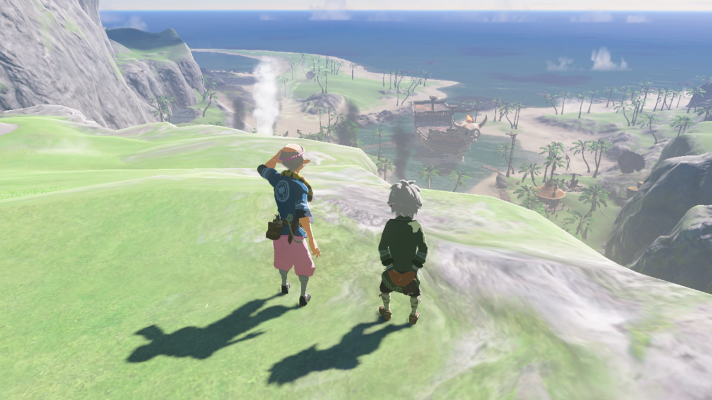

图：被怪物占领的沃托里村——村长洛泽尔与建筑师樱达在神庙旁等你帮忙，海湾里还停着海盗船。
先说结论：清干净力量槽，村民才回来
本任务是沃托里村线的开场。海边的沃托里村被一群怪物占了，村民全跑了，只剩村长洛泽尔与建筑师樱达躲在神庙旁。进村后屏幕上方会出现怪物力量槽，把村里和海湾海盗船上的怪物全部清干净，力量槽清空，任务完成，村民陆续返回，准备重建。
| 阶段 | 要做的事 |
|---|---|
| 接任务 | 传送到希富米米神庙，在神庙旁找洛泽尔与樱达交谈 |
| 清怪 | 按片清理村里的怪物群，最后登上海盗船 |
| 收尾 | 力量槽清空，别漏井底那一只；洛泽尔与樱达回村准备重建 |
接取与奖励
| 项目 | 内容 |
|---|---|
| 接取 | 地图东南角，希富米米神庙旁，找村长洛泽尔与建筑师樱达交谈 |
| 位置 | 沃托里村（海边） |
| 奖励 | 解锁后续任务「沃托里村重建计划」 |
| 前置 | 无，随时能接 |
怪物分布总览
怪物分成几群，各据一处，别一口气全引出来。建议按下面这个顺序打，从村口一路打到海盗船：
| 地点 | 怪物 | 要点 |
|---|---|---|
| 村里的井 | 波克布林 ×1 | 藏在井底，最容易漏 |
| 宝箱店废墟 | 波克布林一群 | 进村先打这一群 |
| 码头篝火旁 | 波克布林、蜥蜴战士 | 两座主码头中间的营地 |
| 料理店废墟 | 波克布林一群 | 村西边 |
| 村西南民房 | 波克布林、蜥蜴战士 | 村子西南角的房子一带 |
| 海湾里的海盗船 | Boss 波克布林、波克布林、蜥蜴战士 | 最后打，船上有炸药桶 |

图：沃托里村在地图东南角的海边——传送希富米米神庙，再往南走就是村子。
第一步：神庙旁找洛泽尔与樱达
传送到地图东南角的希富米米神庙，在神庙旁边找到村长洛泽尔与建筑师樱达交谈，得知海边的沃托里村被怪物占领，村民四散逃离。接下任务再进村。
第二步：按片清村里的怪物
进村后屏幕上方会出现怪物力量槽，槽清空才算完成。怪物分成几群，各据一处：一群一群打，别一次引太多。从村外高处（希富米米神庙方向）滑翔进村，居高临下先射几箭，能看清各群怪物的位置。村里的强敌会掉强力素材，带几把没余料的武器，现场余料一把趁手的再打。

图：黑波克布林的角——村里的强敌会掉这类强力素材，现场余料一把趁手的武器再打。
第三步：滑翔登上海盗船
村里的怪清得差不多了，就该上海盗船了。从村里的高台滑翔过去，落在船上。船上有一只 Boss 波克布林，带着几只波克布林与蜥蜴战士。船上有炸药桶，先用火箭或炸弹花箭远远引爆，能先削一波血再上去打。把怪打进深水里会直接淹死，船边作战时可以利用这一点。
第四步：别漏井底那一只
如果其他怪物都消灭了，力量槽还没清空，先去村里的井看看。井在村子北边，旁边堆着木箱子，井口冒着黑烟，下到井底藏着一只波克布林。打掉它，力量槽清空，洛泽尔与樱达返回村子，准备着手重建，任务完成。
关键信息表
| 项目 | 内容 |
|---|---|
| 接取地点 | 地图东南角，希富米米神庙旁，找村长洛泽尔与建筑师樱达 |
| 怪物力量槽 | 进村后出现在屏幕上方，清空才算完成 |
| 怪物分布 | 村里的井、宝箱店废墟、码头篝火、料理店废墟、村西南民房、海盗船 |
| 海盗船 | 船上有 Boss 波克布林与炸药桶，从村里高台滑翔过去 |
| 最容易漏的 | 井底的一只波克布林（井在村子北边，井口冒黑烟） |
| 奖励 | 解锁后续任务「沃托里村重建计划」 |
容易翻车的地方
- 力量槽剩一点点——先去井底看看，那只波克布林最容易漏。
- 忘了海盗船——村里的怪清完了不算完，船上的也得打。
- 一次引太多——分群打，先清弱的，再集中对付 Boss 波克布林和蜥蜴战士。
- 船上硬冲——先远远引爆炸药桶，削一波血再上去。
- 武器快坏了——村里强敌掉的素材攻击力不低，现场余料一把再打。
一句话总结
神庙旁接任务，进村按片清怪，滑翔上海盗船打 Boss 波克布林，最后别漏井底那一只——力量槽清空，村民回来，准备重建。